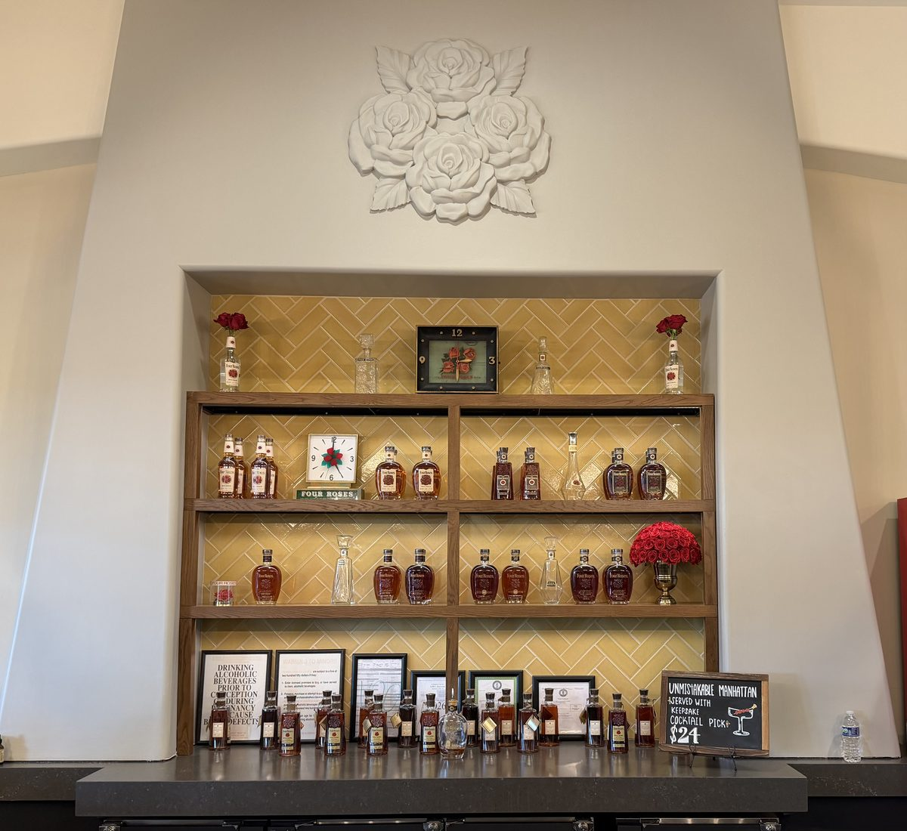
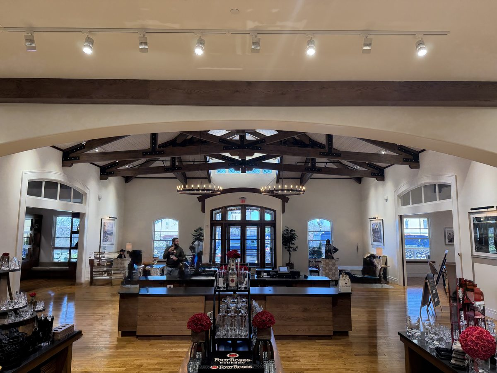
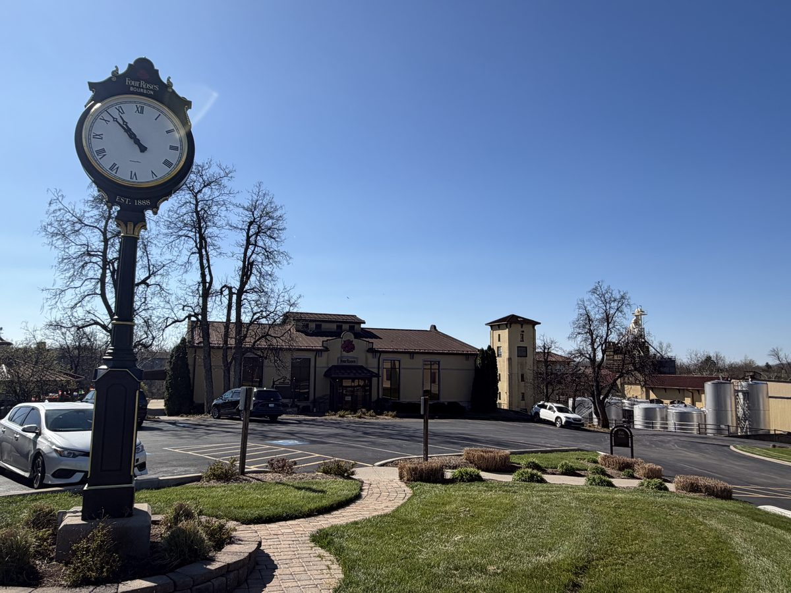
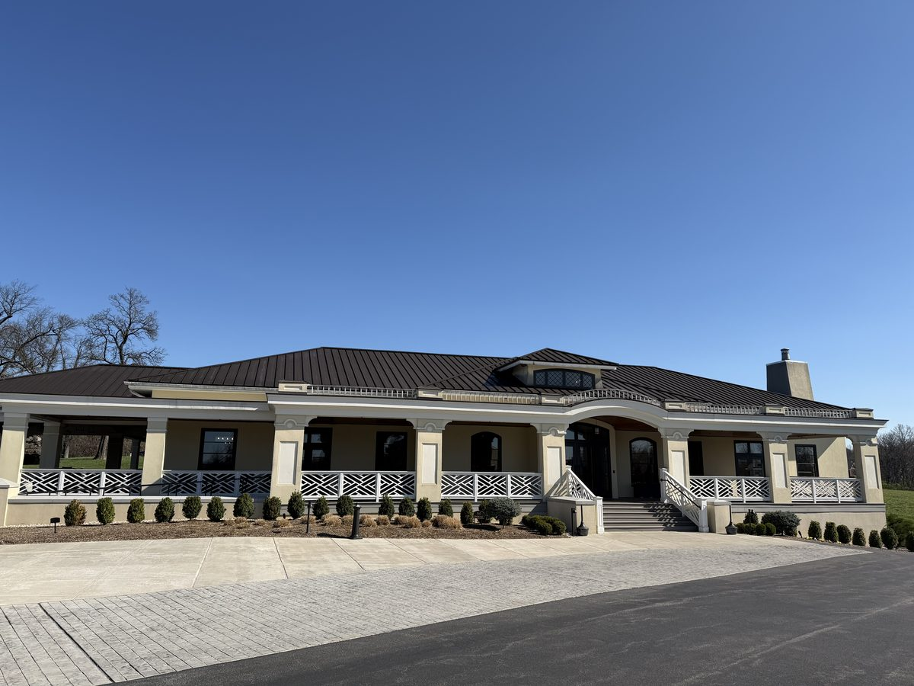

Architecturally unique Spanish Mission-style distillery with 10 distinct bourbon recipes, a relaxed vibe, and some of the most knowledgeable guides on the trail. A hidden gem that bourbon enthusiasts love.
Four Roses is one of those distilleries that bourbon enthusiasts rate higher than casual visitors, and for good reason. The 10 distinct bourbon recipes (2 mashbills × 5 yeast strains) give them a complexity that most distilleries can't match. If you're interested in the science of how different ingredients create different flavors, this is your stop.
The distillery itself is beautiful, a Spanish Mission-style building that looks like nothing else on the trail. It's architecturally unique and surprisingly photogenic. The campus is smaller and more intimate than the mega-distilleries, which gives tours a more personal feel.
The vibe is relaxed. Crowds are lighter than at Buffalo Trace or Maker's Mark, guides are exceptionally knowledgeable, and the tasting at the end is one of the most educational on the trail.




Tour the Spanish Mission distillery and learn about the 10-recipe system. Ends with a tasting that helps you understand how different mashbills and yeasts create distinct flavor profiles. One of the most educational tastings available.
A seated tasting focused on their limited edition and single barrel offerings. Smaller group, more time with the bourbon. Great for enthusiasts who already know the basics.
Four Roses is one of the easiest bookings on the trail. Walk-ups are common, and a reservation a few days ahead is more than sufficient. Even weekends rarely fill up more than a week in advance.
They also have a separate Warehouse & Bottling facility in Cox's Creek (near Bardstown) that offers tours, worth knowing if you're in the Bardstown area and want to see the aging and bottling side.
Focused gift shop with Four Roses products at MSRP. The distillery-only single barrel picks are the highlight, these are barrels selected by their team from specific recipes and are only available at the distillery. Four Roses Small Batch Select is also worth grabbing. Affordable, well-curated selection.
Four Roses is the thinking person's bourbon stop. The 10-recipe system is fascinating, the architecture is unique, and the relaxed atmosphere makes it a welcome change of pace from the busier distilleries. It's also one of the best values on the trail, exceptional quality at a low price with zero booking stress. Pairs perfectly with Wild Turkey and Woodford Reserve on a Lawrenceburg day.
Address: 1224 Bonds Mill Rd, Lawrenceburg, KY 40342
Hours: Wednesday–Saturday 9 AM – 4 PM, Sunday 12 PM – 4 PM. Closed Monday–Tuesday.
Parking: Free lot.
Kids: Allowed on tours.
Kentucky River views. Jimmy Russell legacy.
Horse country campus. Copper pot stills.
Restored pre-Prohibition grounds.
Famous sandwiches near Woodford Reserve.
Four Roses Distillery is featured in our 3-Day Bourbon Trail Itinerary. See the full day-by-day route for how it fits with nearby stops.